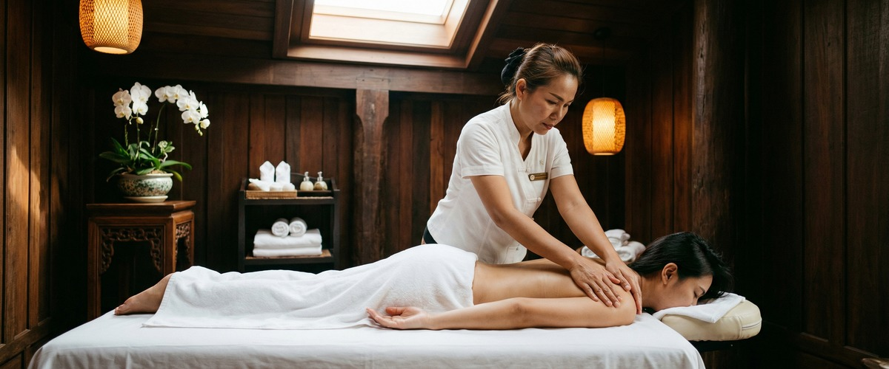
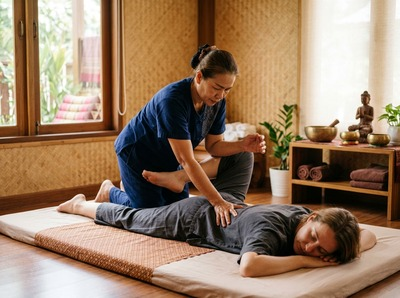

That familiar ache in your shoulders, the stubborn tension across your upper back, the spot you press instinctively with your thumb and wince.

Muscle knots are one of the most common physical complaints people live with every day, and they rarely go away on their own. If tight, knotted muscles are limiting your comfort and movement, Thai massage therapy offers a targeted, evidence-informed approach to genuine relief.
Muscle knots are clinically known as myofascial trigger points, hyperirritable spots within skeletal muscle that form when muscle fibres tense up and fail to release. They appear as small, hard nodules within a taut band of muscle tissue. They are often tender to touch and can refer pain to other parts of the body.

Common causes include repetitive movement, poor posture, overexertion, dehydration, and long periods of inactivity. Stress is also a major factor. When the body holds mental tension, the muscles carry it too.
The result is restricted movement, localised aching, and in some cases headaches or broken sleep.
Massage works on muscle knots through several connected processes. Pressure and targeted manipulation increase blood flow to the affected area. This delivers oxygen and nutrients while clearing the waste that builds up in contracted tissue.
A randomised, placebo-controlled trial published on PubMed found that massage raised the pain threshold at trigger points. Improvement continued across multiple sessions.
Traditional Thai Massage is a fully clothed treatment. It uses acupressure, assisted stretching, and work along the body's sen energy lines. Sustained pressure on trigger points breaks the tension cycle within the muscle fibre.
Assisted stretching then lengthens the surrounding tissue and restores range of motion. Thai Oil Massage and Thai Sports Massage use therapeutic oil and firm, flowing strokes. These soften the fascia and reduce inflammation around stubborn knots.
You can book a session online to begin addressing your tight muscles with professional, hands-on care.
At Thai Massage Greenock on South Street in Greenock, Jariya begins every session with a conversation. She asks where you're holding tension, what your daily routine involves, and what you want from the treatment. There is no generic protocol.
She works through the areas of concern, using acupressure to find and release trigger points. She then eases the surrounding tissue with assisted stretching or oil work.
Jariya trained at Bangkok's Wat Po temple, the birthplace of traditional Thai massage. She brings that depth of skill to every session. Clients often notice the muscles softening during treatment.
Fuller relief tends to follow over the next day or two. For knots that keep coming back, a course of regular sessions works best. Jariya keeps detailed notes so each visit builds on the last.
Anyone carrying habitual muscle tension will benefit. The people who most often arrive at Thai Massage Greenock with knotted muscles include office workers at a desk for eight or more hours, tradespeople doing repetitive physical work, drivers with chronic neck and shoulder stiffness, athletes managing post-training recovery, and people whose stress has settled into their upper back and shoulders. If that sounds familiar, book your appointment online and let Jariya address it properly.
Muscle knots, or myofascial trigger points, form when muscle fibres are overworked, held in fixed positions, or strained without enough recovery. Poor posture, stress, dehydration, and inactivity all play a role. The fibres contract and fail to fully release. This leaves a palpable nodule of tense tissue.
Some tenderness in the treated area is normal for 24 to 48 hours after a session that targets deep knots. This is a sign the tissue has been worked and is responding. Drinking plenty of water and applying gentle heat can ease any short-term soreness. Across sessions, the overall trend is less pain and better movement.
This depends on how long the knot has been there and how deep the tension runs. A single session can bring clear relief for recent or mild knots. Chronic tension tends to respond better to a series of treatments spaced a week or two apart. Jariya will suggest a realistic plan after your first session.
Traditional Thai Massage is often the most direct option. It combines acupressure on trigger points with assisted stretching that lengthens the surrounding muscle. Thai Sports Massage suits those with active or physically demanding lifestyles.
Thai Oil Massage works across a broader area of soft tissue. It is a good choice when widespread tightness accompanies localised knots. Jariya will help identify the right approach during your consultation.
Recurring knots usually mean the root cause has not changed. The posture, the repetitive movement, the stress, or the inactivity that created them is still present. Regular massage keeps the tissue mobile and stops the tension cycle from re-establishing itself. Pairing sessions with simple stretching, movement breaks, and stress management gives the best long-term results.
Light self-massage and gentle pressure can bring short-term relief for mild knots, especially in easy-to-reach areas like the shoulders. But self-treatment cannot reach the full depth of the tissue. It also cannot match the sustained, precise pressure a trained therapist applies.
For stubborn, painful, or recurring knots, professional treatment at Thai Massage Greenock will always produce more thorough and longer-lasting results. You can arrange your session here.